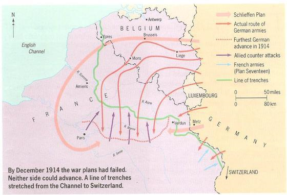
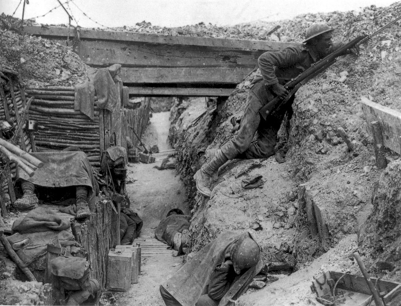

 The German offensive push of 1914 would come to a massive halt at the river Marne. This battle gave the Entente a well needed victory. The battle was very bloody and both sides had massive casualties, and the French alone had over 200,000 casualties. This victory would change the war on the west as both sides would start to entrench themselves. The next campaign on the front would be the Race to the Sea where both sides would fight each other while new trenches were built from Switzerland all the way to the coast. The Entente powers wanted to out flank Germany, but during this race no battle had a decisive victory. The German war plan changed from annihilation to exhaustion. The next three years would be mostly composed of trench warfare and occasional offensive on certain positions. Neither side would have a major victory to eliminate the opposition.  Trench warfare was a majority of World War I, where both sides would dig out lines of defenses. Trenches became home to many soldiers, soldiers would fire from trenches, which protected them from other rifle and artillery fire. The area between the trenches became no-man’s land, where any person out there was a sitting duck. Barbed wire and mines were placed in between to cause problems to any assault on a trench. Barbed wire was used at first to contain cattle, but was a cheap and replaceable tool to make it harder for assaults on trenches. As the war went on new weapons were used to overcome trenches. Trench raids became more effective due to new guns and gas weapons, while tanks and airplanes made trenches easier to overcome.